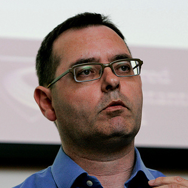

Why Attend?
Why Attend?
Microservices Day is a one-day, single-track, non-profit event that focuses on the business benefits of utilizing microservices. It is aimed at chief digital officers, chief technical officers, chief information officers, VPs of engineering and senior tech decision makers. Learn how leading enterprises are leveraging digital transformation to achieve rapid delivery and be inspired, not intimidated, by the unicorns.
Aims of the Event
The event aims to bring together two worlds: technology unicorns and traditional enterprises.
Technology unicorns RedHat, Zalando, AutoScout 24, Netflix, Uber and Groupon will be talking about the speed they have been able to achieve as cloud-native technology companies, and about the state-of-the art of technologies they’re creating using the microservice architecture.
Traditional enterprises such as McKinsey, ADP, and TES will be talking about their transformations from traditional enterprises where technology is an enabler to technology companies where technology is a differentiator. These companies will be sharing real world lessons learned during this transition. Each company will talk about the journey they have been on from a business perspective as they transition to applying an engineering mindset to their business.
The discussions during microservices day will focus on where the microservice architecture is going as a technology, and how enterprises can use it for competitive advantage.
Speakers
9:30 - 10:00
“Solving service discovery: how Node.js microservices can find each other without a registry”
The microservices architecture brings with it all the challenges of distributed systems, not least the need for services to find each other. Gossip protocol algorithms such as SWIM mean that microservices can do away with the service discovery issue altogether, relying instead on an evolving, dynamic map of their local network. This talk examines the use of the SWIM algorithm to build a Twitter clone in Node.js, one microservice at a time.
Richard Rodger, CTO @ nearForm

Richard is the co-founder, chief technology officer (CTO) and technology thought leader behind nearForm. An acknowledged early authority on microservices, Richard is the author of The Tao of Microservices and the creator of Seneca, an open source microservices tool kit for Node.js. He is the host of the Dublin Microservices Meetup.
10:00 - 10:30
“Microliths: how to avoid traps in your stack and your culture”
You’ve strangled your monolith down to a number of services. However, you could still be facing a very coupled and synchronous application in your new ‘microlith’. Jason describes some key approaches that technology organizations can use to help them make organizational mind-shifts.
Jason Melo, Chief Architect @ Lifion by ADP
Jason is chief architect at Lifion by ADP. He is a cross-domain technology entrepreneur who took his startup to a successful exit in 2008. He has created high-performance, scalable, secure web, mobile and enterprise systems for big-name clients such as Warner Music Group and Deloitte.
11:00 - 11:30
Talk
Clifton Cunningham , CTO @ TES Global
Clifton is CTO of TES Global. He started up and sold his first software company before he was 25. His passion is for technology as a tool for transformational change. He has had a distinguished career in some of the world’s largest corporations including Accenture, CapGemini and Mail Online.
11:30 - 12:00
“Autobahn in the cloud”
Christian gives us the inside track on how AutoScout24 is building its ‘Autobahn in the cloud’ to become the market leader in Europe's vehicle listings business. He will explain how his company is reinventing itself by making a radical transition from monoliths to microservices, from .NET on Windows to Scala on Linux, from datacenter to AWS, and from ‘built by devs and run by ops’ to a DevOps mindset.
Christian Deger, Software Architect @ AutoScout24 GmbH
Christian Deger is a software architect at AutoScout24. He is deeply involved with ‘Tatsu’, the project that is transforming the mature AutoScout24 IT system into a next-generation digital platform.
1:30 - 2:00
“How to enable organizations to go faster”
Fred explores this hugely popular topic from the viewpoint of three inhibitors, drawing heavily on his own extensive experience: technology choices, staid business processes, and traditional organizational structures and roles.
Fred George is an industry consultant and has been writing code for over 46 years in over 70 languages. An early adopter of OO and Agile, Fred continues to impact the industry with his leading-edge ideas.
2:00 - 2:30
“Fighting the Good Fight at the Hot Gates of Micro-Services”
Gilt has taken the architecture of gilt.com from monolith to about 300 cloud-based micro-services, all working tirelessly to handle the hordes of vistors we see every day at noon. There are problems and unanticipated side-effects, however: deployment, software ownership, staging, testing, dependency management, alerting and IO. Adrian will talk about the microservices architecture that he and his team have implemented, and how they are tackling its problems.
Adrian Trenaman, Software Engineer @ Gilt
Adrian is SVP of engineering at HBC Digital / Gilt. He is a software engineer, communicator and leader with over 20 years of experience throughout Europe, US and Asia in diverse industries. He became a committer for the Apache Software Foundation in 2010 and has acted as an expert reviewer to the European Commission.
3:00 - 3:30
“Microservices and Containers. How much faster than a VM?!”
Are containers really orders of magnitude faster at instantiating than VMs? Or is that just hype? How might this change future architectures? What will the effect be on Microservices? Come to Anne's talk to find out…
Anne Currie, Co Founder & Consultant @ Force12.io
Anne Currie has been in the tech industry for over 20 years, working on everything from core server technology to pioneering e-commerce platforms. She is currently CTO of Microscaling Systems, with a focus on the convergence of microservices and containers.
3:30 - 4:00
Talk
Peter Elger, Director of Engineering @ nearForm
Peter is head of engineering at nearForm. He started his 20-year career at the Joint Jet Fusion Undertaking in the UK, building data acquisition and analysis systems for a Tokamak fusion reactor. Peter has held technical leadership roles across a broad base of the IT industry, in both the research and commercial sectors.
4:30 - 5:00
Talk
Joe Drumgoole, Director of Developer Advocacy EMEA @ mongoDB
Joe Drumgoole is Director of Developer Advocacy EMEA at MongoDB. At MongoDB he helps developers to understand and utilise MongoDB in order to unleash the power of software and data for innovators everywhere. He is a software entrepreneur with over 25 years experience of successful product delivery at Digital Equipment Corporation, Nomura, Oracle Corporation, CR2 and Cape Clear Software. He has founded three software startups. Joe is a regular speaker at technical conferences and has provided mentoring and advice to many Startups over the past ten years.
Below you find a selection of unaffiliated hotels near to the event:
-
3 South Place,
London EC2M 2AF
Cost: £££
"Located where the sophisticated City of London meets the Cultural East End, Liverpool Street and Moorgate Station are on their doorstep; the West End is ten minutes away by tube. Their 80 bedrooms, four bars,five private dining rooms and two restaurants are all iconic Conran design."
-
52 Chiswell Street,
London EC1Y 4SA
Cost: ££
"Situated in the heart of The City of London; this exceptional grade II listed building has been stunningly restored into a luxury five star hotel. Conveniently located near Barbican and Moorgate stations and easily accessible from Liverpool Street station."
-
18-21 Charterhouse Square,
London EC1M 6AH
Cost: ££
"Located on the edge of Clerkenwell in West Smithfield, this is one of the most stylish and conveniently located hotels in Central London. Bathed in natural light and lively with an understated 1970s vibe."
-
1-23 City Road,
London EC1Y 1AG
Cost: £
"Conveniently close to several transport links, this picturesque hotel is located in the heart of London and is within easy reach of some of London’s best attractions such as the West End which is famous for its shopping, restaurants and theatres."
Code of Conduct
Our conference is dedicated to providing a harassment-free conference experience for everyone, regardless of gender, gender identity and expression, age, sexual orientation, disability, physical appearance, body size, race, ethnicity, religion (or lack thereof), or technology choices. We do not tolerate harassment of conference participants in any form. Sexual language and imagery is not appropriate for any conference venue, including talks, workshops, parties, Twitter and other online media. Conference participants violating these rules may be sanctioned or expelled from the conference without a refund at the discretion of the conference organisers.
Silk Street London, EC2Y 8DS, Uk